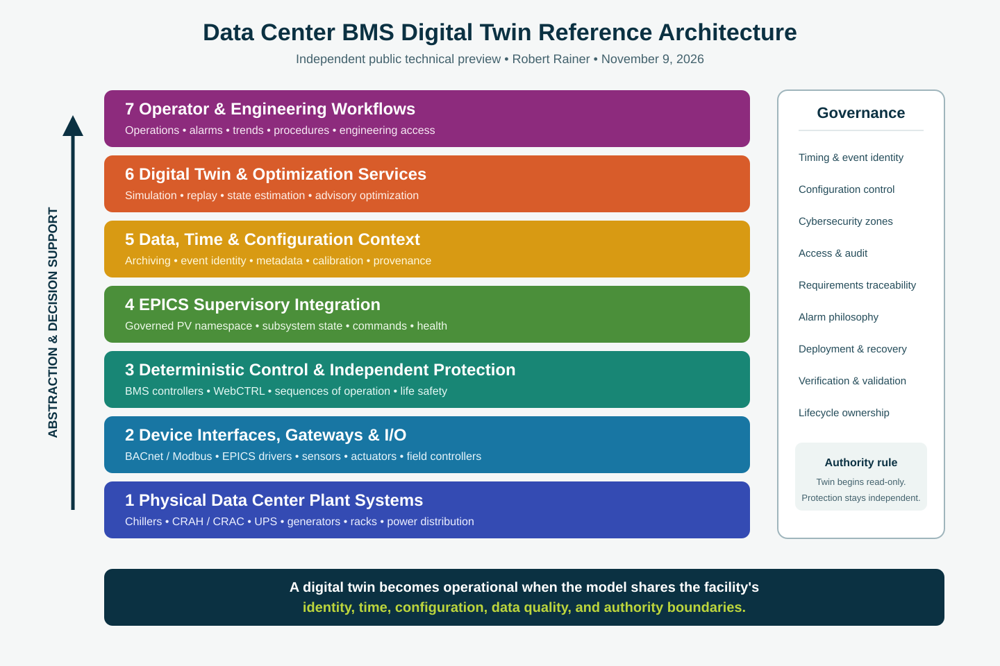

A public technical preview by Robert Rainer
Photo: data center interior — ArchiLabs
This page presents a facility-scale controls and digital-twin architecture for data-center operations. It is an independent engineering concept developed by Robert Rainer using public information, established scientific-controls practice, and original systems-engineering work.
System stack: what actually runs the live demo — Data Center BMS System Stack
It is not affiliated with, endorsed by, or representative of the internal systems of DataOne or any other data-center operator.

A useful data-center digital twin cannot be a single thermal model sitting beside the facility. It must be connected to the operational control system through governed interfaces, shared identifiers, trustworthy time alignment, configuration control, and explicit boundaries between supervisory control, deterministic control, and safety.
This reference architecture uses EPICS as a supervisory integration fabric while leaving fast control and independent protection in the layers where they belong. The digital twin is treated as a lifecycle capability: it can begin in simulation, support controls development and virtual commissioning, then evolve into replay, model comparison, diagnostics, optimization, and operator decision support.
The public design describes these layers:
The system is intentionally divided into operational zones so that simulation or analytics cannot silently become a safety authority.
A working demonstrator of layers 1, 2, 4, and 7 runs now: a software IOC serves synthetic PVs for a data-center cooling plant, air handlers, power chain, environmental zones, and a 24-rack thermal map, rendered in the browser as the same Phoebus Display Builder screens used on the desktop. The cooling-anomaly scenario cycles about every 20 seconds, so watch the chilled-water temperature and the scenario label change.
Open the live demo — rainer1370.com/dataone-bms
Displays: Overview, Cooling, Air Handlers, Power, Zones & Alarms, Rack Thermal Map, PLC / EPICS Architecture.
This technical preview publishes the system structure, engineering principles, lifecycle, and collaboration model. Deployment-grade details are intentionally withheld, including exact device inventories, addresses, credentials, protection thresholds, facility-specific network maps, detailed PV databases, vendor BOMs and cost models, and implementation-specific automation.
I am interested in collaborating with data-center operators, facilities teams, laboratories, universities, and engineering teams that want to evaluate, adapt, or deploy this architecture. Engagement can begin with an architecture workshop, a bounded subsystem pilot, or a simulation-to-IOC integration demonstrator.
Contact: rainer1370@gmail.com
Portfolio: rainer1370.com
GitHub: Rainer1370
Copyright © 2026 Robert Rainer. All rights reserved.
This page is published for technical review, professional discussion, and collaboration. No license is granted for commercial implementation, redistribution, or derivative deployment. Contact the author to discuss evaluation or deployment rights.
Public technical preview — November 9, 2026. This is a reference architecture, not a certified design, safety basis, operating procedure, or procurement specification.